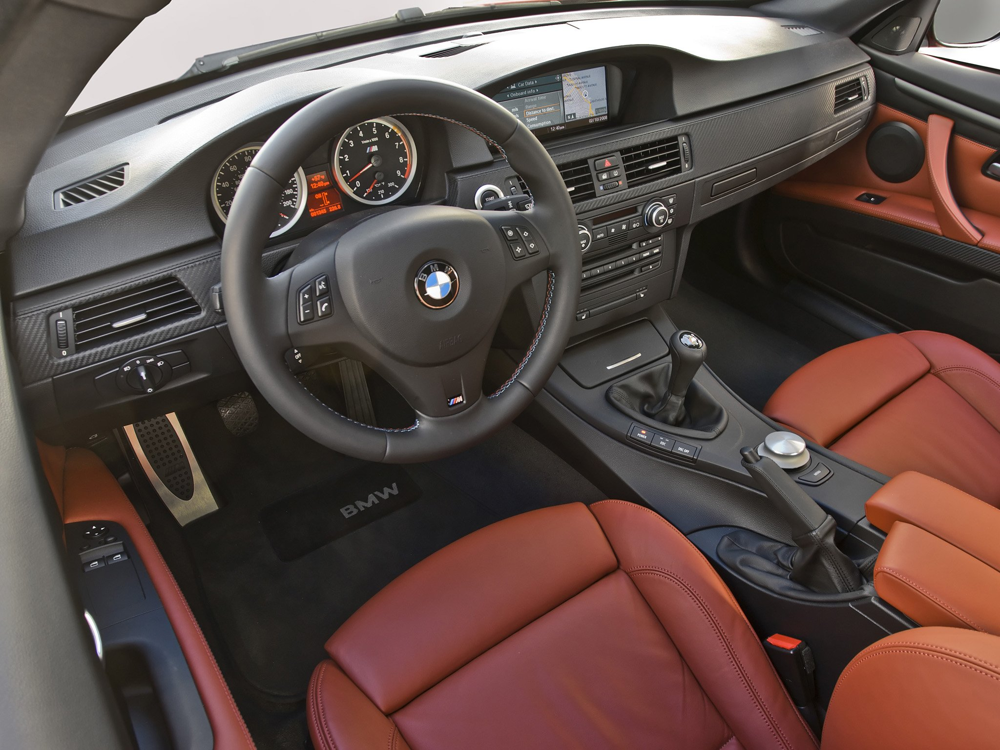
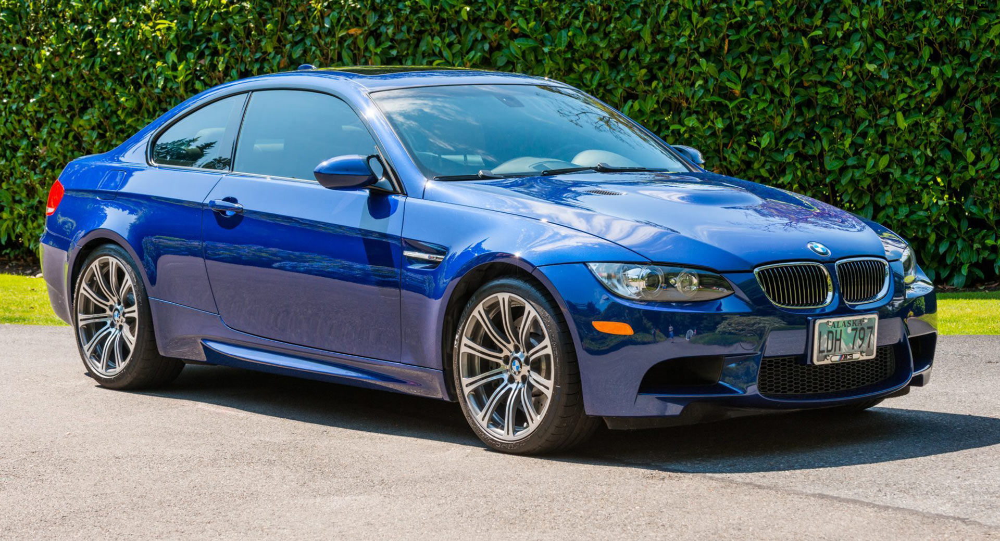
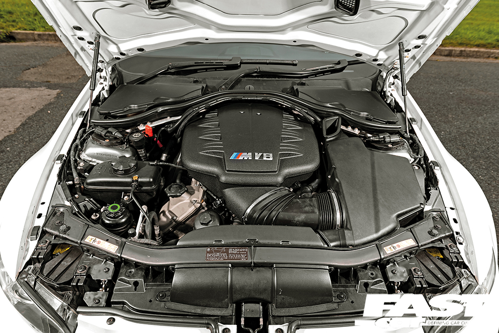
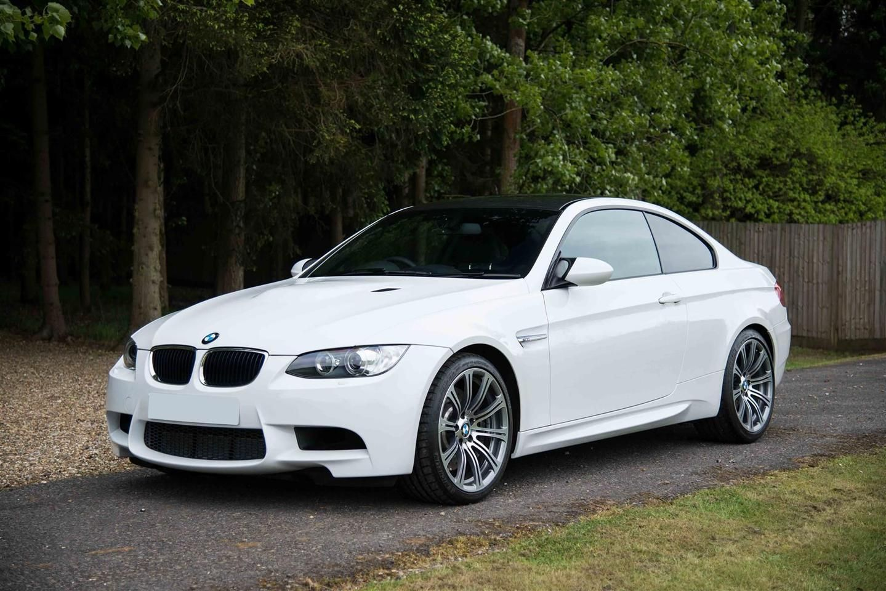

BMW E9x M3 (2007-2013)

The E9X M3 marked a significant departure from its predecessors while simultaneously staying true to the Motorsport ethos that defined BMW’s most celebrated performance cars. It remains the only M3 ever powered by a V8, the high-revving, naturally aspirated S65 engine. A direct descendant of BMW’s championship-winning F1 and Le Mans programs, this engine is a masterpiece of engineering. With an 8,400 rpm redline, individual throttle bodies, and a spine-tingling induction note, the S65 delivers a visceral, unfiltered experience that has become increasingly rare in modern performance cars. Unlike turbocharged successors, power delivery is razor-sharp and rewards commitment—one of the last true driver’s engines in an era where software increasingly dictates the driving experience.
Beneath its muscular yet understated bodywork, the E9X M3 features a chassis that exemplifies BMW’s relentless pursuit of balance. The first M3 to utilize a fully independent aluminum suspension, it achieves an ideal blend of compliance and control. Steering is sharp and communicative, its hydraulic assist providing a direct connection between driver and road that modern electric racks fail to replicate. Whether in coupe (E92), sedan (E90), or convertible (E93) form, the E9X M3 is a car that feels most alive when driven with intent. Capable of docile cruising yet eager to attack a winding road or racetrack, its duality is a defining trait that continues to captivate enthusiasts.
Though overshadowed by its turbocharged successor in outright speed, the E9X M3 offers an experience that feels purer and more engaging. It is a car that demands interaction, rewarding those who revel in the art of driving. As the last naturally aspirated M3, it represents the end of an era—one where Motorsport engineering and raw mechanical engagement took precedence over sheer numbers. Today, it stands as one of BMW’s most charismatic modern classics, a car that blends usability with spine-tingling performance in a way few others can.
The E9X M3’s spec sheet is impressive, featuring a 4.0L S65 V8 producing 414 horsepower at 8,300 rpm and 295 lb-ft of torque, paired with either a six-speed manual or a seven-speed dual-clutch transmission (DCT). Its near-perfect 50:50 weight distribution, aluminum suspension, and hydraulic steering provide exceptional balance and road feel, while its brakes, though strong, can show signs of fade under heavy track use. However, the S65 engine has known weak points, most notably premature rod bearing wear, which can lead to catastrophic failure if not addressed. Throttle actuators are another common failure, often needing replacement around 50,000–80,000 miles, while early DCT models can suffer from mechatronic issues. Cooling system components, including the water pump and radiator, may also require attention over time. Despite these concerns, a well-maintained E9X M3 remains one of BMW’s most engaging and rewarding performance cars, offering a driving experience that is increasingly rare in modern vehicles.
 